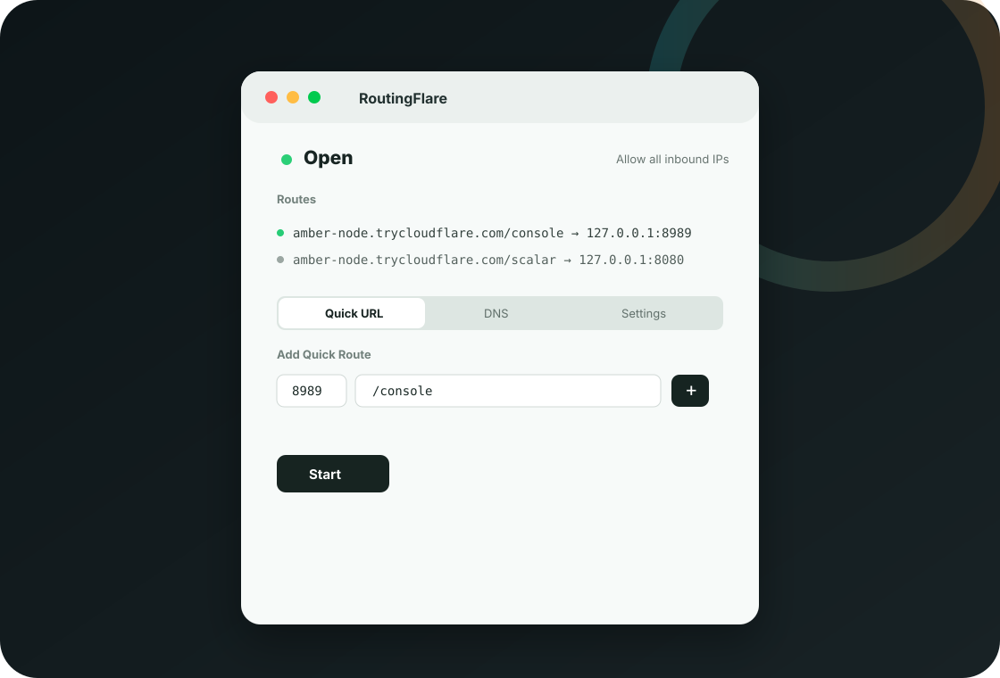
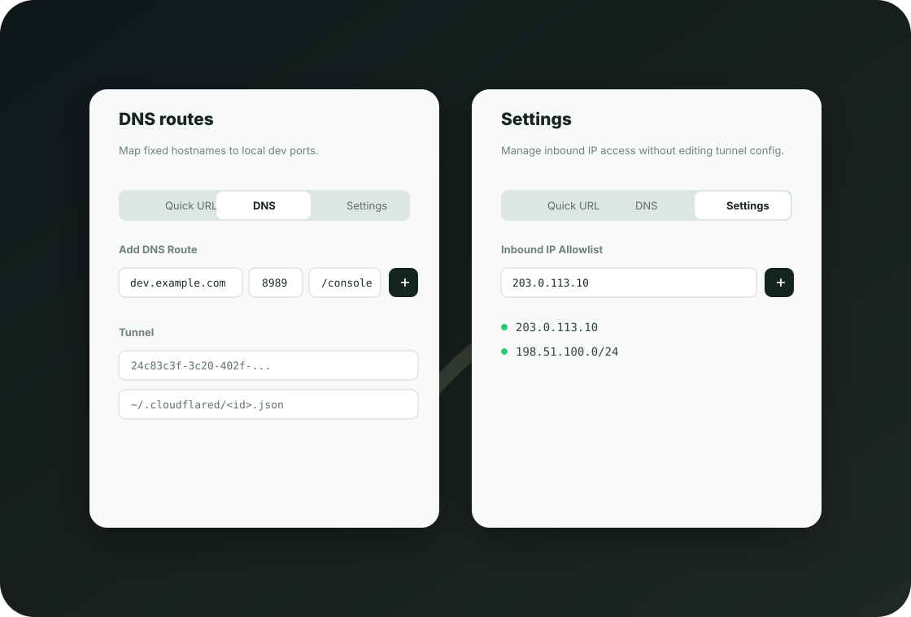

RoutingFlare
A macOS menu bar app for opening local development ports through Cloudflare Tunnel. Add Quick URL or DNS routes, control inbound IP access, and keep your local server workflow fast.

Expose local ports without leaving the menu bar.
RoutingFlare wraps cloudflared with a small local proxy, so each route can map a public path to a local port.
Create temporary trycloudflare.com routes for local testing without a Cloudflare login.
Use an existing named Cloudflare Tunnel to map hostnames and paths to local ports.
Restrict access with exact IPs or CIDR ranges through the built-in local filtering proxy.
Built around route visibility.
The route list stays at the top. Quick URL, DNS, and Settings tabs only change what you add or configure next.

Simple local dev flow.
Start a local app on a port like 3000, 8080, or 8989.
Enter port and path for Quick URL, or hostname, port, and path for DNS.
RoutingFlare starts a local proxy and opens the Cloudflare Tunnel.
Use the Settings tab to manage inbound IP allowlist entries.